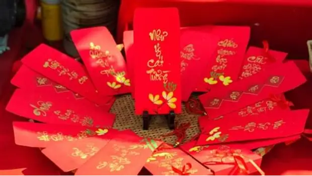

Trước Tết
🧹 Dọn dẹp nhà cửa thấy mẹ, tướt lá mai thấy nội.
🍃 Gói bánh tét lá chuối.

🔥 Cúng ông Công ông Táo ngày 23 tháng Chạp.
Trong Tết
⏰ Cúng giao thừa ngoài trời.
🧧 Lì xì trẻ lớn ít vaic, chúc Tết ông bà.

🙏 Đi chùa cầu bình thường đầu năm.
Sau Tết
🕯️ Hóa vàng tiễn ông bà.
🎊 Tham gia lễ hội đầu xuân tại địa phương, năm nào cũng chán như nhau.